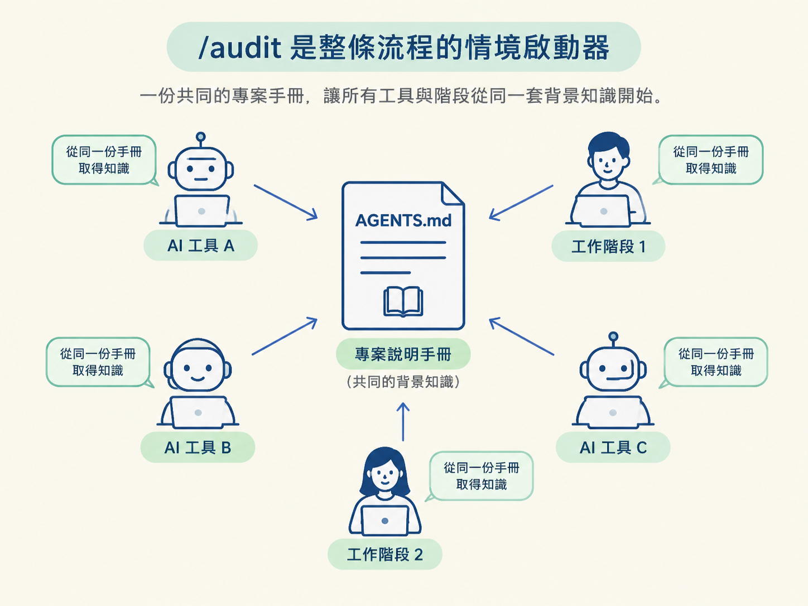
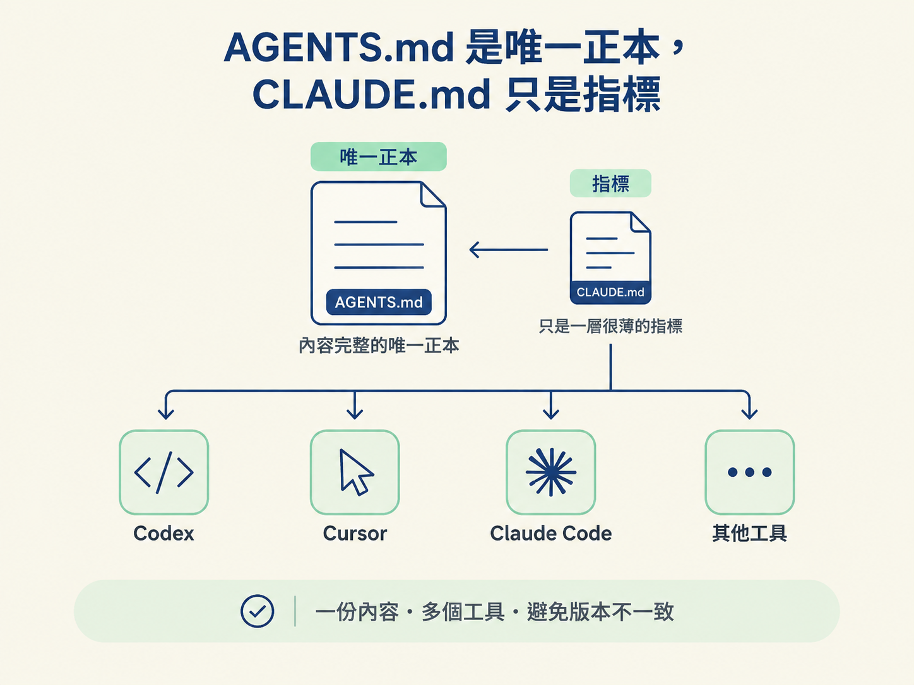
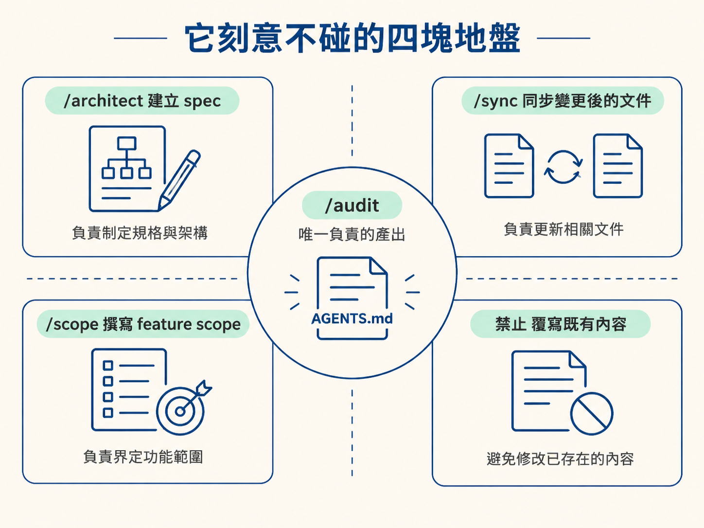

完成這一節後，你應該能說清楚三件事：/audit 在整條工作流中負責什麼、AGENTS.md 與 CLAUDE.md 各自扮演什麼角色，以及為什麼 /audit 刻意不接手其他 skill 的工作。
想像你開了一個新的小專案。第一次請 AI 幫你加功能時，你得先說明：專案使用 TypeScript、資料夾怎麼分、錯誤處理有沒有統一寫法，命名要用 camelCase 還是 snake_case。隔天再請它做另一件事，這些資訊又得重新講一遍。
接手既有專案時，情況通常更麻煩。你把一個三年沒碰的 repo 交給 AI，它讀了幾十個檔案後開始猜：這個服務的用途是什麼、測試怎麼跑、哪些目錄不能碰。只要猜錯一個關鍵地方，後面就可能得全部重來。
這兩個場景其實都指向同一個問題：專案知識沒有被固定下來，每次都要靠對話臨時重建。
/audit 就是用來處理這件事的。它把「這個專案是什麼、怎麼寫才對」整理成一份放在 repo 裡的說明書。之後，不論是哪個階段或哪種 AI 工具，都可以直接讀這份說明，不必再次從頭認識專案。
這一節先建立基本心智模型：/audit 會產出什麼、檔案放在哪裡，以及哪些人或工具可以修改它。後面四節才會逐一進入它的四種工作模式。
/audit 在工作流中很早就會出現，但它的工作其實很單純：只負責寫情境檔，不寫功能，也不寫規格。
你可以把它想成「新人 onboarding 手冊產生器」。每來一個新工具或新階段，就像多了一位新同事。與其讓每個人各自摸索，不如先準備一份共同手冊，讓大家從同一套背景知識開始。

這份產出會成為後續每個 skill 的共同起點。/architect 設計內容前會讀它，/develop 動工前會讀它，平常使用的 AI 工具也會自動載入它。
因此，/audit 的品質會一路往下傳。手冊寫得準，後面每一站都少一點猜測；手冊寫得含糊，後面每一站都得花力氣補洞。
這套流程對專案知識的存放位置有一條清楚規則：耐久的情境知識一律放進 AGENTS.md，其他檔案只負責指向它。
原因在於，不同 AI 工具會讀不同的檔名。Codex、Cursor 這類工具會直接讀 AGENTS.md，而 Claude Code 習慣讀 CLAUDE.md。如果每個工具各自維護一份內容，時間一久，就可能出現三份版本互相矛盾。
所以這裡採用單一正本：內容只寫在 AGENTS.md，旁邊放一個很薄的 CLAUDE.md。它不重複內容，只用一行指向真正的說明：
# CLAUDE.md
This project's context for all AI tools lives in [AGENTS.md](./AGENTS.md).
Claude Code loads it via the import below:
@AGENTS.md@AGENTS.md 是 Claude Code 的匯入語法，意思是「把旁邊的 AGENTS.md 內容讀進來」。如此一來，工具可以有很多個，但真正需要維護的內容只有一份，不會讓不同版本各說各話。

還有一個容易漏掉的細節：CLAUDE.md 只放指標、內容不重複，這項規則在 root 與區域層級都一樣。如果某個子目錄有 nested 說明，旁邊的 CLAUDE.md 也只負責指向它。
專案說明書不一定只有一份。這套流程把它分成兩個層級，分別管理不同範圍的資訊：
| 層級 | 位置 | 裝什麼 |
|---|---|---|
| root | 專案根目錄的 AGENTS.md | 全局事實：技術棧、常用指令、跨專案通則，並且保持精簡 |
| nested | <area>/AGENTS.md | 只有真的具備特殊慣例、特殊指令或特殊陷阱的區域才放 |
root 有一條硬規則：維持在約 60 行以內。它會在每次對話中載入，因此內容越長，就越像每次進門都要背著一個越來越重的背包，持續消耗 context。
區域專屬的細節不必全部塞進 root。把它留在對應區域的程式碼旁邊，等有人真的處理那個區域時再載入，才能把背景資訊放在需要它的地方。
當某個區域有自己的 nested 文件，root 的 ## Context files 區塊會多一行指標，告訴讀者這裡還有區域說明。不過，這不代表每個資料夾都要配一份文件。
只有真的存在非顯而易見的慣例時，才值得建立 nested 說明。否則只是把 root 想省下的雜訊，換個地方繼續堆積。
一個 skill 好不好用，往往也取決於它清楚知道哪些事不該做。/audit 的責任邊界很明確，以下四件事都不屬於它：
/architect 的產物，有自己的目錄與生命週期。/sync 的工作。/scope，並且存在自己的目錄中。/audit 只補充，不修改原有內容。把界線畫清楚，你就知道遇到不同問題時該找哪一支 skill，而不是讓每一支 skill 都試著包辦所有事情。

其中「只補、不改」尤其重要。後續步驟會看到，這不只是操作習慣，而是整個 /audit 的核心設計：它要補足專案缺少的背景，不應該悄悄把原本的人類整理過的內容改成另一個版本。
/audit是工作流的情境啟動器，唯一的產出是AGENTS.md。它是工具中立的唯一正本，CLAUDE.md只是一個薄薄的指標，不重複內容。說明書分成 root 與 nested 兩層：root 保持精簡，nested 只放在真的有特殊慣例的區域。/audit不建立 spec、不維護變更後的文件、不寫 scope，也不覆寫既有內容。
現在你知道 /audit 要產出什麼了。但同一個指令，用在空白專案、剛 scaffold 的專案，以及已經運作好幾年的老專案上，做法不會一樣。
下一節會說明它如何透過一串「線上訊號」判斷該走哪條路，以及為什麼有些時候，它寧可停下來問你一句，也不願意自行猜測。